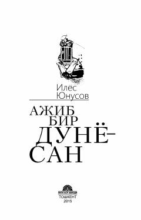

ABInson taqdiri, yaqin o'tmish saboqlari va ma'naviy poklik haqidagi qissa.
Ilyos Yunusovning ushbu qissasida yaqin o'tmishdagi ijtimoiy hayot, insonlar taqdiri va ma'naviy qadriyatlar haqida hikoya qilinadi. Asarda sobiq ittifoq davridagi o'zgarishlar va turli xarakterdagi qahramonlarning hayot yo'llari tasvirlangan.